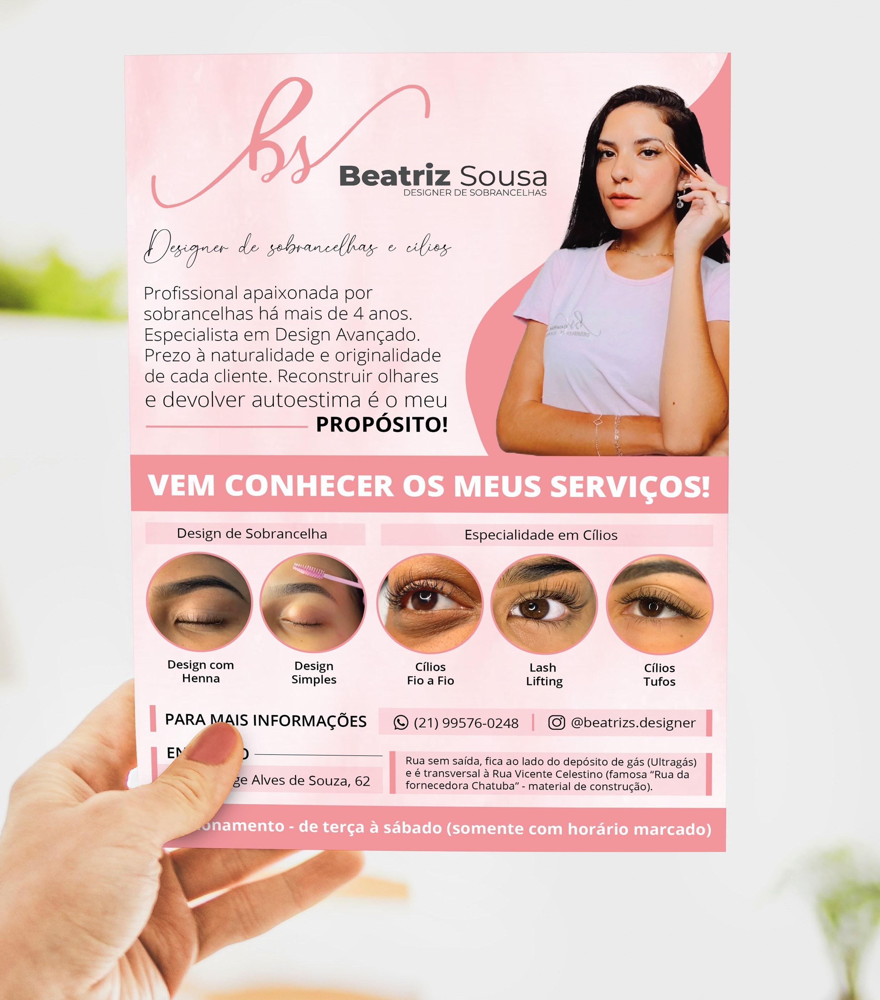
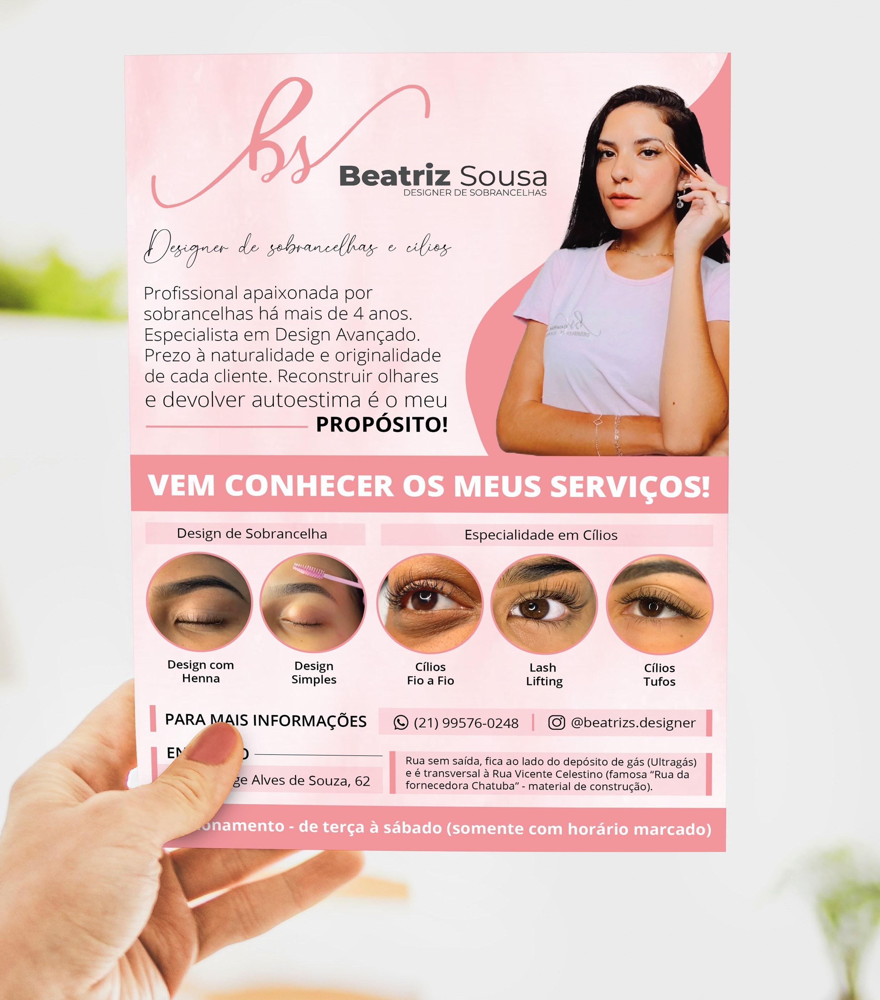
Beatriz Sousa - Design de Sobrancelhas. Uma profissional apaixonada por sobrancelhas há mais de 4 anos. Especialista em Design Avançado. Que prioriza à naturalidade e originalidade de cada cliente. Reconstruir olhares e devolver autoestima é o seu PROPÓSITO!. Foi criado um Flyer onde estão todas as informações necessárias como serviços oferecidos e formas de contato.
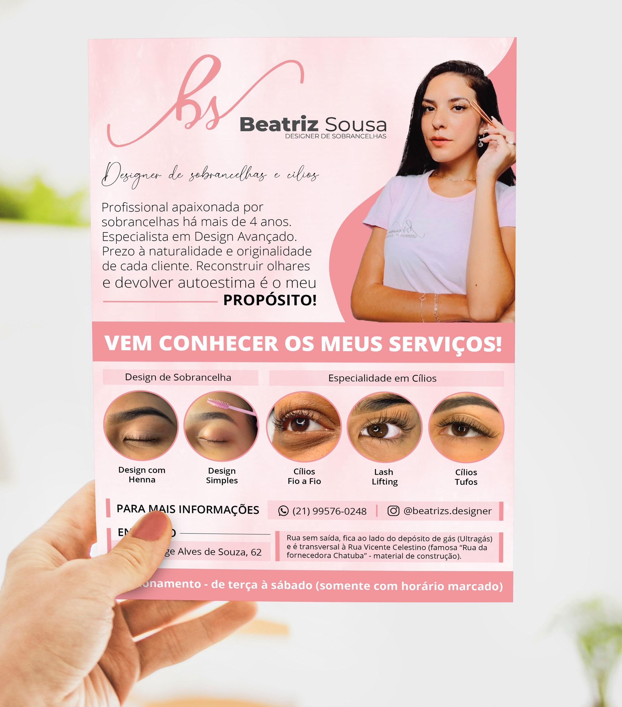
Hamburgueria Delivery House Burger, será inaugurada quarta-feira (31/03/2021). Ela oferecerá diversos hambúrgueres e também deliciosas porções e sobremesas. Conta com o serviço delivery que entregará os lanches nas casas dos clientes com segurança. Para isso foi elaborado um Cardápio onde consta todos os lanches oferecidos, uma forma fácil e prática para o cliente, um Panfleto que será distribuído para alcançar seu público e artes para a rede social do estabelecimento visando chamar a atenção para o serviço. E design para suas embalagens.

 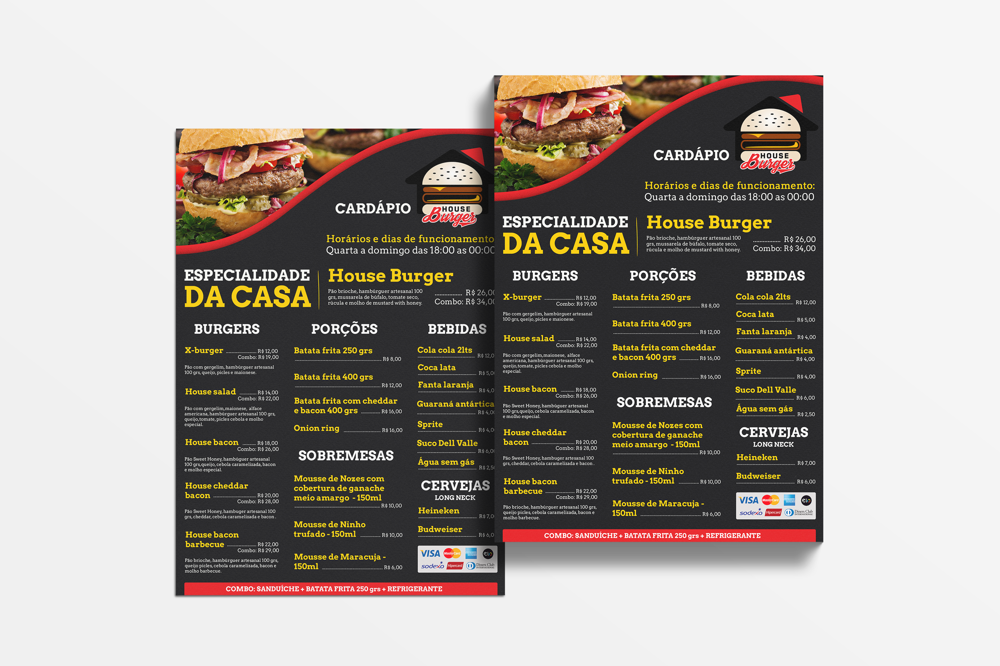
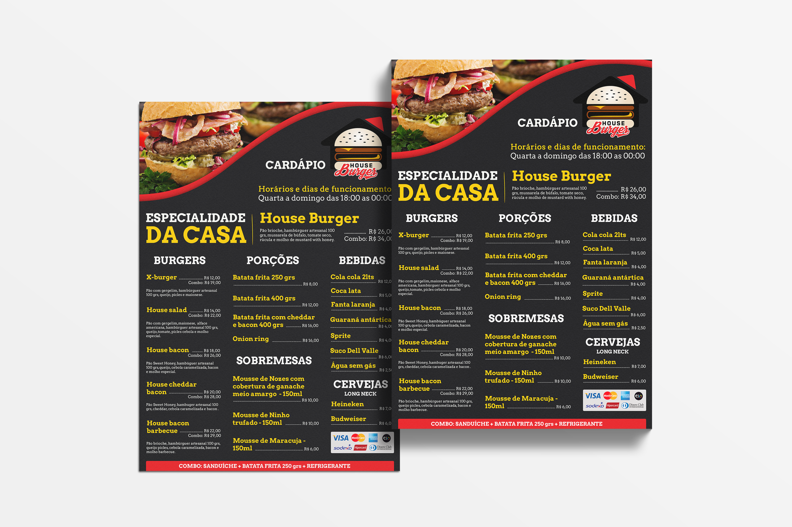
 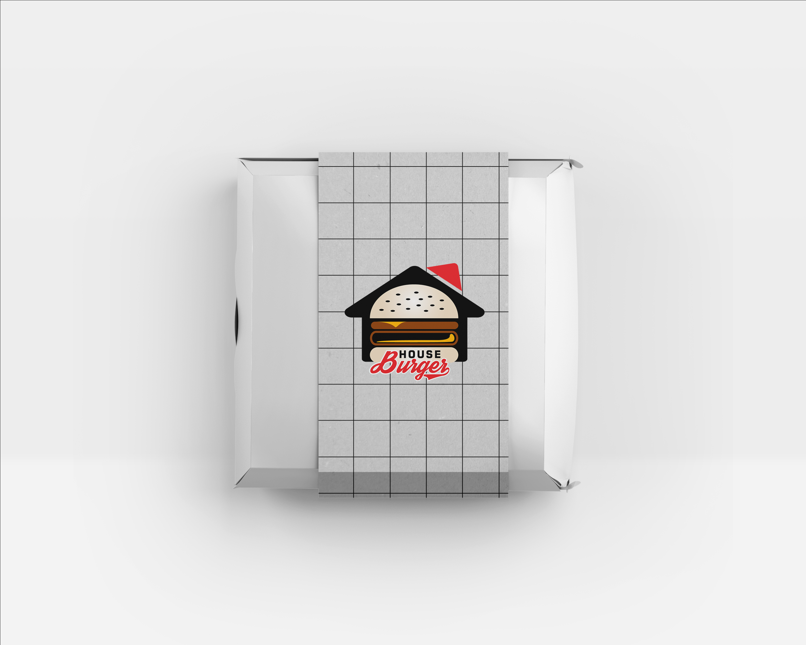
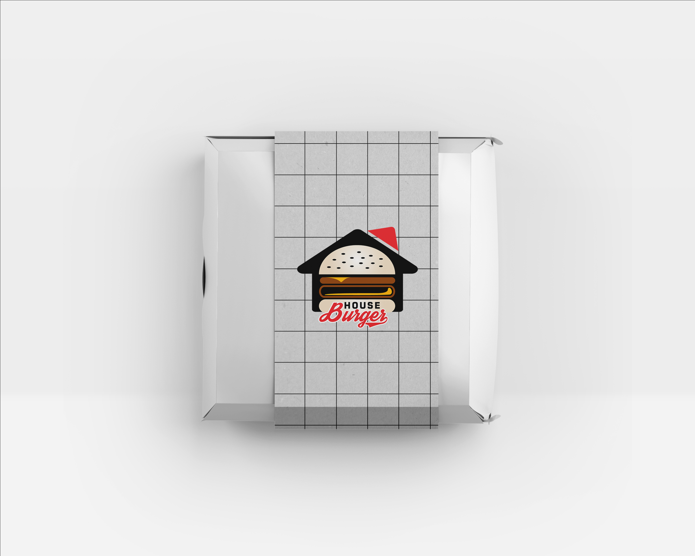
 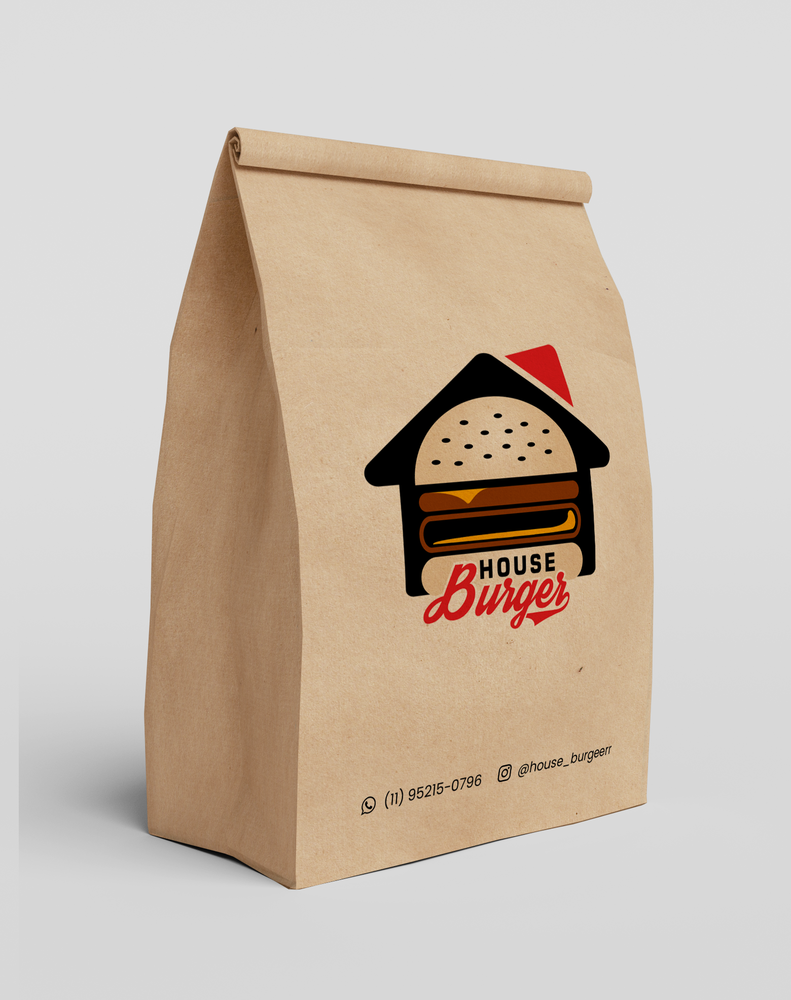
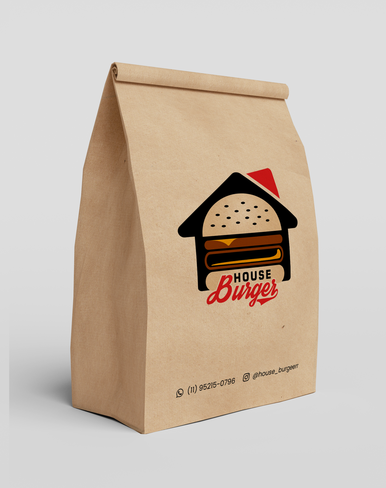

ArtWork - Reforma e Construção. É uma empresa especializada em reforma e construção, buscando sempre levar a melhor solução para o desejo de seus clientes. Especializada em serviços de engenharia civil, reforma residencial e materiais de construção. Foi desenvolvida toda a identidade visual da marca, seu logotipo, design para blusas, cartão de visita, entre outros.
 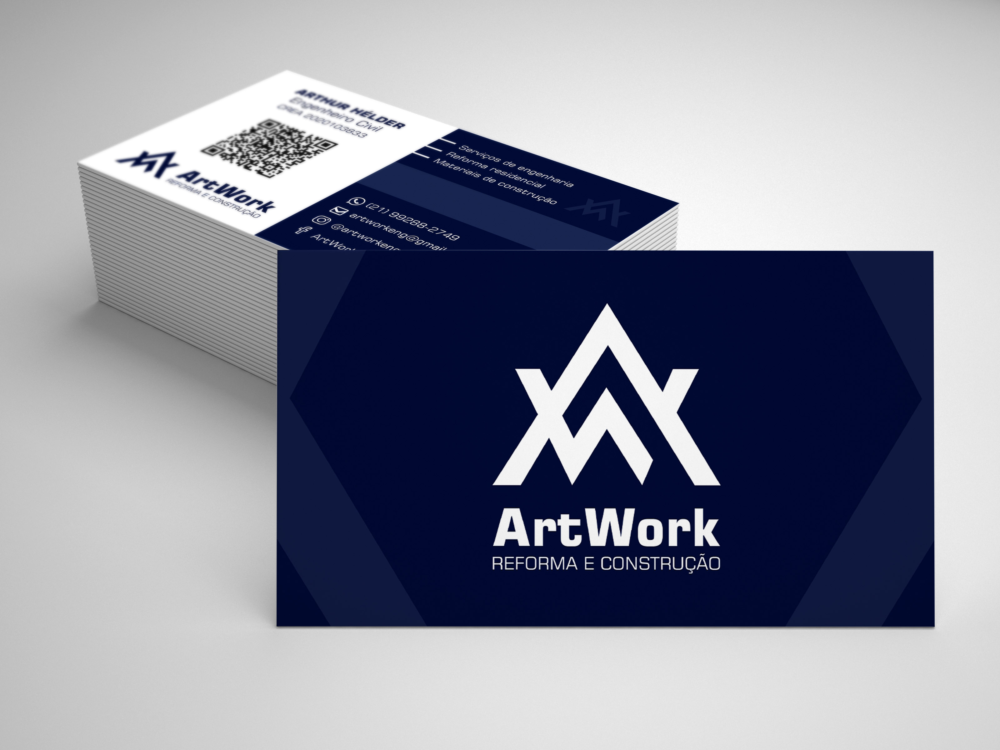
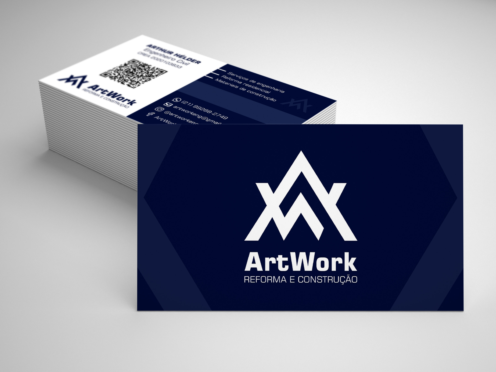


Foi desenvolvido um cardápio no formado folder, 1 panfleto para divulgação da inauguração do estabelecimento e 2 banners para chamar atenção nos pratos oferecidos.
 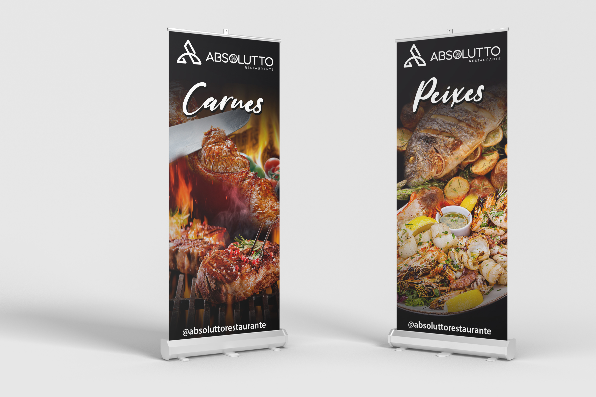
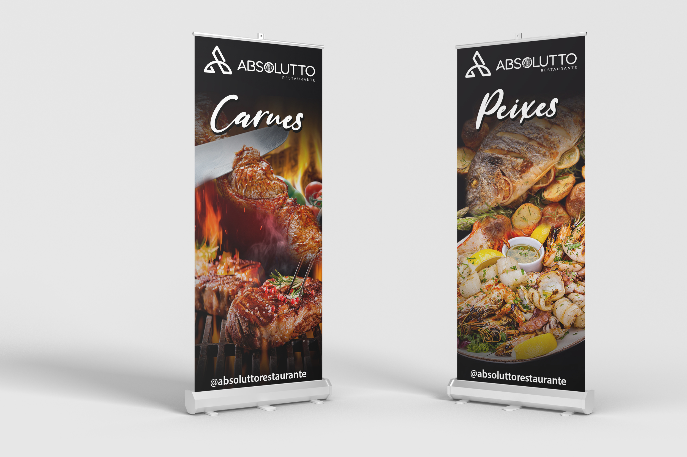